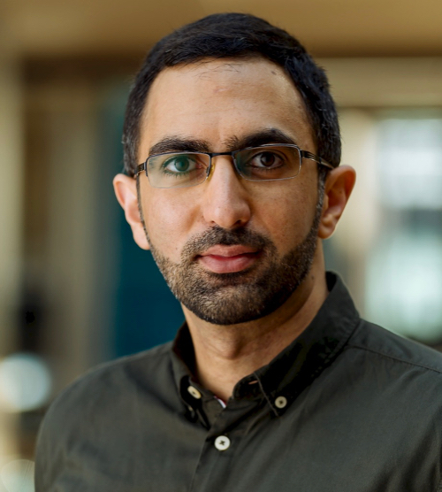

Senior Software Engineer & Research Scientist
AI Group, Bloomberg
Formerly: Doctoral student @ Max Planck
Institute for Informatics,
advised by Gerhard Weikum
🔥 في 08/11/2019 أطلقنا العنصر 14، قناة يوتوب علميّة عن تكنولوجيا الحاسوب في حياتنا اليوميّة. المزيد ...
I am broadly interested in the problem of facilitating
user access to knowledge hiding within structured
and textual data. My work lies at the intersection of NLP, IR and Databases. I worked on various approaches to executable semantic
parsing for question answering over large knowledge graphs [EMNLP 2012, CIKM 2013, WWW 2017, EMNLP 2017]. Because structured sources are never complete and
QA technology will always be imperfect when translating questions into some
formal meaning representation, ..
I've also looked at the problem of
combining structured and textual data to improve the robustness of question answering [EMNLP 2014, WSDM 2016, VLDB 2016, EDBT 2019].
I've also worked on the problem of deploying QA systems starting with
very little training data through a never ending learning approach [WWW 2018].
To help improve the state of the art in factoid QA to match
what actual users ask, I helped release ComQA, a dataset of
factoid questions gathered from community QA website, annotated with
answers and paraphrase clusters [NAACL 2019]. Recently, I've been
interested in the problem of improving the usability of QA systems based
on semantic parsing through semantically driven auto-completion. The resulting
completion systems complete to those and only those questions that the
underlying QA system understands, facilitating both discovery and expectation management [SIGIR 2018, arXiv 2019]. Finally, because
all work and no play makes one a dull boy, I played with fun problem of reverse-Jeopardy!:
automatically generating Jeopardy! episodes from knowledge
bases [WWW 2015, WebSci 2016, ICTIR 2017].
(more)